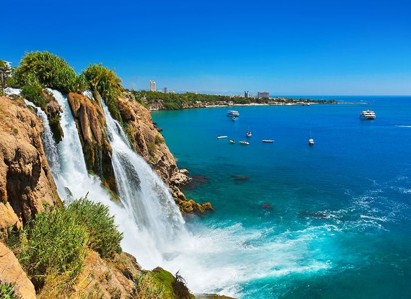

Antalya Hakkında
Antalya, Akdeniz Bölgesi'nde yer alan ve tarihi, doğal güzellikleriyle ünlü bir şehirdir. Kaleiçi, Düden Şelalesi ve Konyaaltı Plajı gibi birçok turistik mekana ev sahipliği yapar.
Gezilecek Yerler
- Kaleiçi
- Düden Şelalesi
- Olympos Antik Kenti
- Konyaaltı Plajı
- Aspendos Tiyatrosu
Turlar
Antalya'da yapabileceğiniz aktiviteler ve turlar:
- Yat Turları
- Dalış Turları
- Doğa Yürüyüşleri
- Kültür Turları
Fiyat Bilgisi
Antalya'da sunulan tur hizmetlerinin ortalama fiyatları:
- Yat Turları: 700 TL
- Dalış Turları: 800 TL
- Doğa Yürüyüşleri: 300 TL
- Kültür Turları: 500 TL